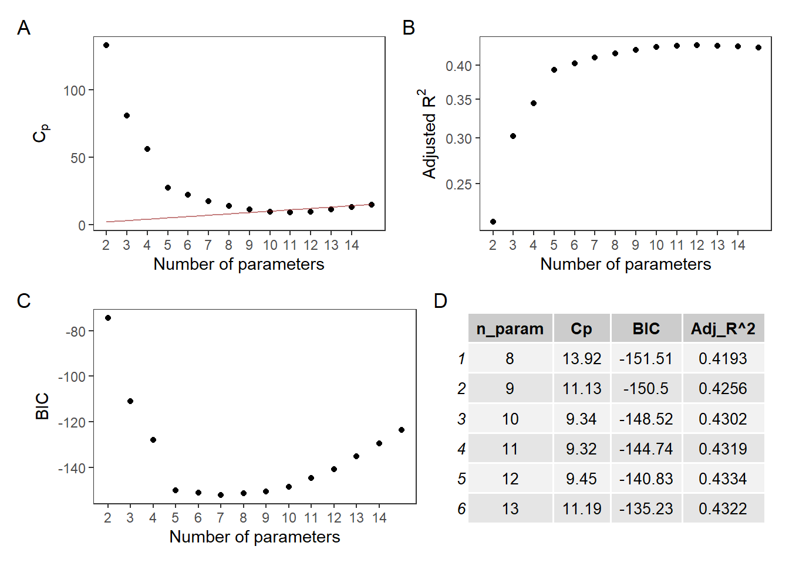

Main Effect
Criterion-based Variable Selection
We used the function regsubsets to perform feature selection. This function automatically searches through all possible models, and returns the best model under different numbers of parameters. The figure below displayed \(C_p\) value, Adjusted-\(R^2\) and BIC of models with different input features, which suggests that the model with 9 or 10 parameters should be the optimal one.
b = regsubsets(crm_1000 ~ ., data = cdi, nbest = 1, nvmax = 14, method = "exhaustive")
rs = summary(b)
myfun = function(x){
x
}
rs_df = tibble(n_param = 2:15,
`Cp` = round(rs$cp, 2),
`BIC` = round(rs$bic, 2),
`Adj_R^2` = round(rs$adjr2, 4))
cp_plot =
rs_df %>%
ggplot(aes(n_param, y = Cp)) +
geom_point() +
stat_function(fun = myfun, geom = "line", alpha = .5, color = "darkred") +
scale_x_continuous(breaks = seq(2, 14, 1)) +
xlab("Number of parameters")+
ylab(expression(C[p])) +
theme_bw() +
theme(
panel.grid.major.y = element_blank(),
panel.grid.minor.y = element_blank(),
panel.grid.major.x = element_blank(),
panel.grid.minor.x = element_blank()
)
adjr2_plot =
rs_df %>%
ggplot(aes(n_param, y = `Adj_R^2`)) +
geom_point() +
scale_x_continuous(breaks = seq(2, 14, 1)) +
scale_y_log10() +
xlab("Number of parameters")+
ylab(expression(paste("Adjusted ", R^2))) +
theme_bw() +
theme(
panel.grid.major.y = element_blank(),
panel.grid.minor.y = element_blank(),
panel.grid.major.x = element_blank(),
panel.grid.minor.x = element_blank()
)
bic_plot =
rs_df %>%
ggplot(aes(n_param, y = BIC)) +
geom_point() +
scale_x_continuous(breaks = seq(2, 14, 1)) +
xlab("Number of parameters")+
ylab("BIC")+
theme_bw() +
theme(
panel.grid.major.y = element_blank(),
panel.grid.minor.y = element_blank(),
panel.grid.major.x = element_blank(),
panel.grid.minor.x = element_blank()
)
(cp_plot | adjr2_plot) / ( bic_plot | gridExtra::tableGrob(rs_df[7:12, ], theme = gridExtra::ttheme_default(10))) +
plot_annotation(tag_levels = 'A') +
plot_layout(widths = 1)
- Features used in the 9-parameter model are:
rs$which[8,rs$which[8,]] %>% names()## [1] "(Intercept)" "pop" "pop18"
## [4] "poverty" "pcincome" "regionNorth central"
## [7] "regionSouth" "regionWest" "beds_1000"- Features used in the 10-parameter model are:
rs$which[9,rs$which[9,]] %>% names()## [1] "(Intercept)" "pop" "pop18"
## [4] "bagrad" "poverty" "pcincome"
## [7] "regionNorth central" "regionSouth" "regionWest"
## [10] "beds_1000"
Partial-F Test for Nested Models
To determine which model we should choose, we perform partial-F test for nested models.
- H0: The coefficient of variable
bagradis 0. (\(\beta_{bagrad} = 0\)) - H1: The coeeficient is not 0.
fit_9 = lm(crm_1000 ~ pop + pop18 + poverty + pcincome + region + beds_1000, data = cdi)
fit_10 = lm(crm_1000 ~ pop + pop18 + poverty + pcincome + region + beds_1000 + bagrad, data = cdi)
anova(fit_9, fit_10) %>%
broom::tidy()## # A tibble: 2 x 6
## res.df rss df sumsq statistic p.value
## <dbl> <dbl> <dbl> <dbl> <dbl> <dbl>
## 1 431 173385. NA NA NA NA
## 2 430 172379. 1 1007. 2.51 0.114With a significance level of 0.05, because p > 0.05, we fail to reject the null hypothesis and conclude that the regression coefficient for variable bagrad is 0. Therefore, we choose the 9-parameter model for further analysis.